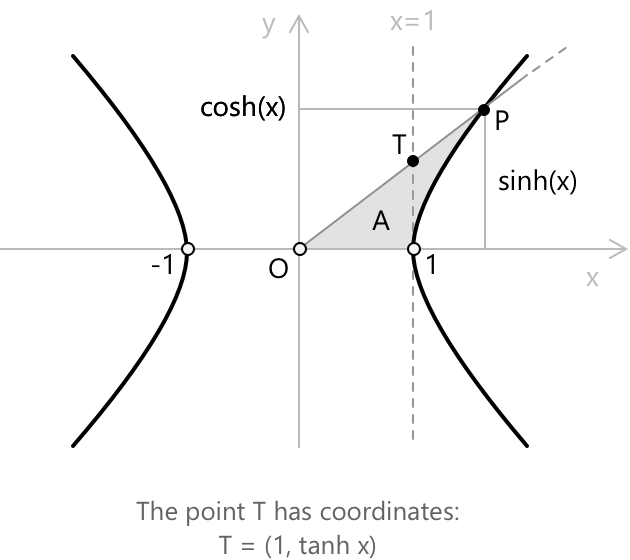
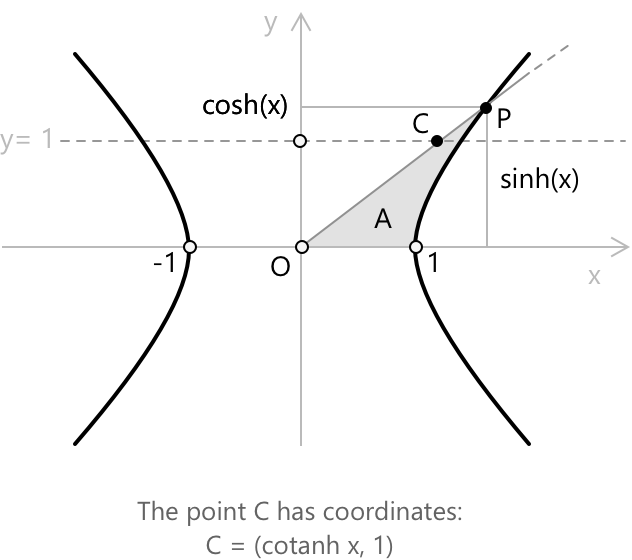
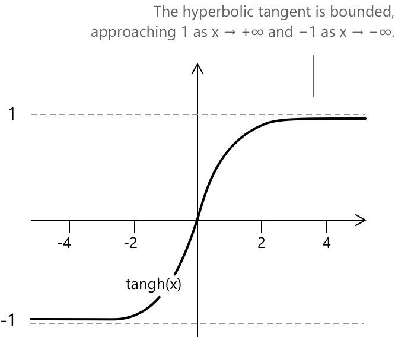
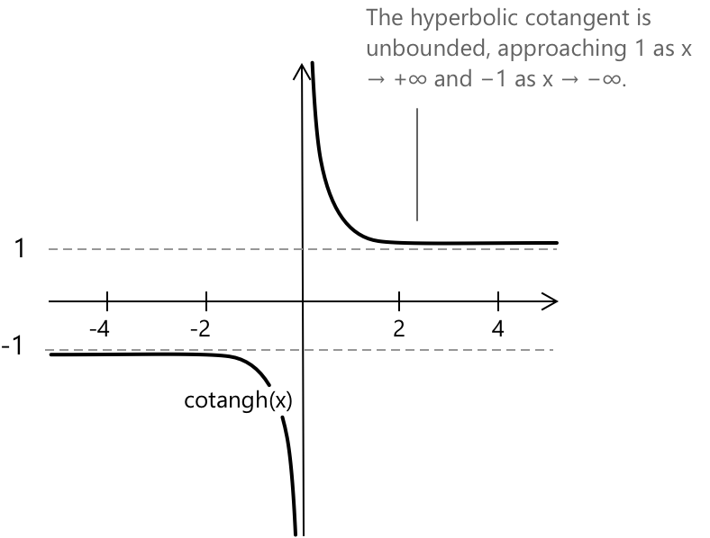

Гіперболічний тангенс та котангенс
Вступ до гіперболічного тангенса та котангенса
Гіперболічний тангенс і котангенс виникають природним чином із гіперболічного синуса та косинуса точно так само, як круговий тангенс і котангенс виникають із кругового синуса та косинуса. Дано гіперболічний синус і косинус, обидва введені у зв'язку з правою гілкою рівносторонньої гіперболи:
\[ X^{2} – Y^{2} = 1 \]
Гіперболічний тангенс визначається як їхнє відношення, за умови, що \(\cosh(x)\) не дорівнює нулю. Оскільки \(\cosh(x) \geq 1\) для всіх дійсних \(x\), знаменник ніколи не дорівнює нулю, і гіперболічний тангенс, отже, визначений на всій дійсній прямій. Гіперболічний котангенс передбачає обернене відношення і вимагає \(\sinh(x) \neq 0\), що виключає лише \(x = 0\).
Після того, як точка \(P(\cosh(x), \sinh(x))\) на гіперболі була визначена як така, що відповідає підписаному гіперболічному сектору площею \(x/2\), гіперболічний тангенс і котангенс можна визначити за її координатами. Гіперболічний тангенс — це відношення вертикальної координати до горизонтальної:
\[ \tanh(x) := \frac{\sinh(x)}{\cosh(x)} \]

Щоб зробити побудову більш інтуїтивною, розглянемо одиничну гіперболу \( x^2 – y^2 = 1 \) і точку \( P = (\cosh x, \sinh x) \), пов'язану з гіперболічним кутом \( x \). Проведемо пряму, що проходить через початок координат \( O \) та точку \( P \), і розглянемо вертикальну пряму \( x = 1 \). Їхній перетин визначає точку \( T \), яка має координати \( T = (1, \tanh x) \), оскільки кутовий коефіцієнт прямої \( OP \) дорівнює \( \sinh x/ \cosh x = \tanh x \). Вертикальний відрізок, що з'єднує \( (1,0) \) з \( T \), таким чином геометрично представляє довжину гіперболічного тангенса.
Гіперболічний котангенс — це обернене відношення, тобто горизонтальна координата, поділена на вертикальну:
\[ \coth(x) := \frac{\cosh(x)}{\sinh(x)} \]

Як і у випадку, описаному вище для гіперболічного тангенса, щоб зробити побудову більш інтуїтивною, розглянемо одиничну гіперболу \( x^2 – y^2 = 1 \) і точку \( P = (\cosh x, \sinh x) \), пов'язану з гіперболічним кутом \( x \). Проведемо пряму, що проходить через початок координат \( O \) та точку \( P \), і розглянемо горизонтальну пряму \( y = 1 \). Їхній перетин визначає точку \( S \), яка має координати \( S = (\coth x, 1) \), оскільки кутовий коефіцієнт прямої \( OP \) дорівнює \( \sinh x / \cosh x = \tanh x \), і, таким чином, його обернена величина дає \( \coth x = \cosh x / \sinh x \). Горизонтальний відрізок, що з'єднує \( (0,1) \) з \( S \), таким чином геометрично представляє довжину гіперболічного котангенса.
У цій геометричній картині гіперболічний тангенс і котангенс виміряють свого роду нахил точки на гіперболі відносно її двох координат, за аналогією з тим, як круговий тангенс виражає нахил точки на одиничному колі.
Основна гіперболічна тотожність для тангенса та котангенса
Гіперболічний тангенс і котангенс задовольняють тотожність, яка безпосередньо випливає з основної гіперболічної тотожності. Виходячи з:
\[ \cosh^{2}(x) – \sinh^{2}(x) = 1 \]
і поділивши обидві частини на \(\cosh^{2}(x)\), що завжди є додатним, ми отримаємо тотожність для гіперболічного тангенса:
\[ 1 – \tanh^{2}(x) = \frac{1}{\cosh^{2}(x)} \]
Аналогічно, ділення основної тотожності на \(\sinh^{2}(x)\) при \(x \neq 0\) дає тотожність для гіперболічного котангенса:
\[ \coth^{2}(x) – 1 = \frac{1}{\sinh^{2}(x)} \]
Обидві тотожності відображають прямий наслідок рівняння гіперболи: координати точки \(P\) обмежені умовою \(X^{2} – Y^{2} = 1\), і ділення на квадрат будь-якої з координат переводить це обмеження у відношення, що включає функції відношення.
Гіперболічні тотожності
-
\[\text{1. } \quad \tanh(x+y) = \frac{\tanh(x) + \tanh(y)}{1 + \tanh(x)\,\tanh(y)}\]
-
\[\text{2. } \quad \tanh(x-y) = \frac{\tanh(x) – \tanh(y)}{1 – \tanh(x)\,\tanh(y)}\]
-
\[\text{3. } \quad \tanh(2x) = \frac{2\,\tanh(x)}{1 + \tanh^{2}(x)}\]
-
\[\text{4. } \quad \coth(x+y) = \frac{1 + \coth(x)\,\coth(y)}{\coth(x) + \coth(y)}\]
-
\[\text{5. } \quad \coth(x-y) = \frac{-1 + \coth(x)\,\coth(y)}{\coth(x) – \coth(y)}\]
-
\[\text{6. } \quad \tanh(x)\,\coth(x) = 1\]
Формули додавання та віднімання для гіперболічного тангенса та котангенса тісно відображають їхні тригонометричні аналоги, але керуються алгеброю рівносторонньої гіперболи. Остання тотожність просто стверджує, що \(\tanh\) та \(\coth\) є оберненими функціями всюди, де обидві визначені.
Аналітичний вираз гіперболічного тангенса
Використовуючи аналітичні вирази гіперболічного синуса та косинуса через показникову функцію, ми можемо записати гіперболічний тангенс безпосередньо. Підставляючи:
\[ \sinh(x) = \frac{e^{x} – e^{-x}}{2}\] \[ \cosh(x) = \frac{e^{x} + e^{-x}}{2}\]
в означення \(\tanh(x) = \sinh(x)/\cosh(x)\) та спрощуючи множник \(1/2\), що з'являється і в чисельнику, і в знаменнику, ми отримаємо:
\[ \tanh(x) = \frac{e^{x} – e^{-x}}{e^{x} + e^{-x}} \]
Еквівалентна і часто компактніша форма отримується шляхом множення чисельника та знаменника на \(e^{-x}\):
\[ \tanh(x) = \frac{1 – e^{-2x}}{1 + e^{-2x}} \]
або, еквівалентно, шляхом множення на \(e^{x}\):
\[ \tanh(x) = \frac{e^{2x} – 1}{e^{2x} + 1} \]
Усі три вирази є еквівалентними, і кожен відображає різний аспект функції: у першій формі чисельник і знаменник — це самі аналітично визначені гіперболічний синус і косинус. В останніх двох стає відразу помітним показникове зростання при \(x \to +\infty\) або \(x \to -\infty\), і з них можна відразу визначити, що функція прямує до \(1\) та \(-1\) відповідно.
Аналітичний вираз гіперболічного котангенса
Виведення аналітичного виразу для гіперболічного котангенса відбувається за тією ж схемою. Підставляючи вирази \(\sinh(x)\) та \(\cosh(x)\) в означення \(\coth(x) = \cosh(x)/\sinh(x)\), і знову скоротивши спільний множник \(1/2\), ми отримаємо:
\[ \coth(x) = \frac{e^{x} + e^{-x}}{e^{x} – e^{-x}} \]
Як і раніше, множення чисельника та знаменника на \(e^{-x}\) або на \(e^{x}\) дає еквівалентні форми:
\[ \coth(x) = \frac{1 + e^{-2x}}{1 – e^{-2x}} = \frac{e^{2x} + 1}{e^{2x} – 1} \]
Останні вирази показують, що для великих додатних \(x\) функція наближається до \(1\) зверху, тоді як для великих від'ємних \(x\) вона наближається до \(-1\) знизу, при цьому в обох випадках у точці \(x = 0\) є вертикальна асимптота.
Функції гіперболічного тангенса та котангенса
Функція гіперболічного тангенса \(f(x) = \tanh(x)\) визначена для всіх дійсних чисел. На відміну від тригонометричного тангенса, вона не має вертикальних асимптот: її графік — це гладка, монотонно зростаюча крива, яка проходить через початок координат з кутовим коефіцієнтом \(1\) і залишається обмеженою для всіх \(x\). При \(x \to +\infty\) функція асимптотично наближається до \(1\), а при \(x \to -\infty\) вона наближається до \(-1\), отже, область значень — це відкритий проміжок \((-1, 1)\).

- Область визначення: \(x \in \mathbb{R}\)
- Область значень: \(y \in (-1, 1)\)
- Періодичність: неперіодична
- Парність: непарна, \(\tanh(-x) = -\tanh(x)\)
- Горизонтальні асимптоти: \(y = 1\) при \(x \to +\infty\); \(y = -1\) при \(x \to -\infty\)
Функція гіперболічного котангенса \(f(x) = \coth(x)\) визначена для всіх дійсних \(x \neq 0\). Її графік складається з двох гілок: одна для \(x > 0\), де функція спадає від \(+\infty\) до \(1\), і одна для \(x < 0\), де вона зростає від \(-\infty\) до \(-1\). Початок координат є вертикальною асимптотою, а прямі \(y = 1\) та \(y = -1\) є горизонтальними асимптотами.

- Область визначення: \(x \in \mathbb{R},; x \neq 0\)
- Область значень: \(y \in (-\infty, -1) \cup (1, +\infty)\)
- Періодичність: неперіодична
- Парність: непарна, \(\coth(-x) = -\coth(x)\)
- Вертикальна асимптота: \(x = 0\)
- Горизонтальні асимптоти: \(y = 1\) при \(x \to +\infty\); \(y = -1\) при \(x \to -\infty\)
Зв'язок із круговим тангенсом і котангенсом
Кругові тангенс і котангенс визначаються як відношення кругового синуса та косинуса, які, у свою чергу, виникають із геометрії одиничного кола. За цією ж аналогією, гіперболічний тангенс і котангенс є відношеннями гіперболічного синуса та косинуса, що виникають із геометрії рівносторонньої гіперболи. В обох випадках основна тотожність, що обмежує координати точки на кривій, переноситься на відповідну тотожність для функцій відношення.
Існує, однак, фундаментальна відмінність між цими двома випадками: у той час як круговий тангенс є періодичним з періодом \(\pi\) і необмеженим, гіперболічний тангенс є монотонним і обмеженим між \(-1\) та \(1\). Аналогічно, круговий котангенс має вертикальні асимптоти в кожній цілій кратній \(\pi\), тоді як гіперболічний котангенс має лише одну — у початку координат.
Як круговий, так і гіперболічний тангенс вимірюють свого роду відношення координат точки на кривій: одна на одиничному колі, інша — на рівносторонній гіперболі. Структурний паралелізм між цими двома сімействами функцій є однією з найелегантніших рис класичного аналізу.